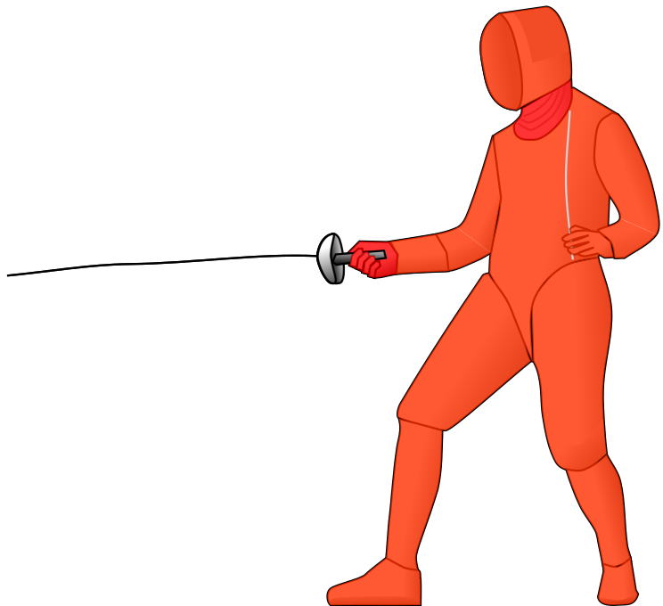
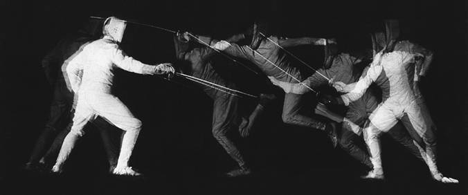

Degen
De degen is het precisie-wapen, zonder regels of beperkingen
De degen (Frans: épée) is een steekwapen waarbij alle lichaamsdelen geldig zijn. Omdat elk lichaamsdeel een doelwit kan zijn en de tegenstander jou ook mag raken wanneer je aanvalt, draait degen-schermen om geduld en het vinden van de juiste opening.

De degen is het enige wapen dat geen 'Recht van Aanval' heeft. Dat betekent dat een verdediger kan besluiten om niet te weren, maar tegelijk met jou 'mee te steken'. Dat maakt aanvallen risico-voller dan bij sabel en floret, waardoor het vinden van een goede opening bij degen nog belangrijker is.
Een degenpartij is doorgaans langzamer dan een partij floret of sabel, omdat degenschermers lang tegenover elkaar kunnen staan om een opening te zoeken terwijl ze hun tegenstander op afstand houden. Als de opening eenmaal gevonden is vallen ze, voor het gevoel, ineens aan. Dit kan heel explosief zijn, zoals met een flèche die langs de tegenstander vliegt.

De degen is het meest populaire wapen bij Masque de Fer.